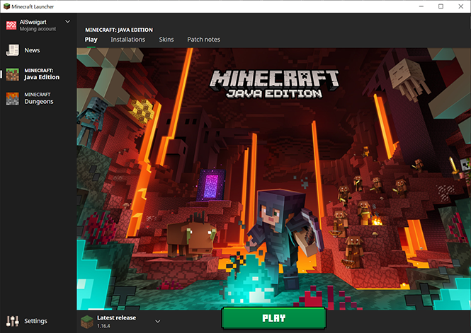
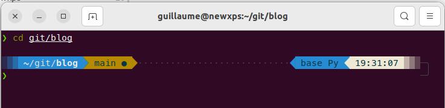

Week 5 - February 23
Wednesday 02/01
Just watched Live coding session #4 from fastai
Just watched video #2 of Stephane Mallat 2023.
Here is a link to Elements of information theory by Thomas Cover and Joy Thomas, reading suggested by S. Mallat (~800 pages)
Just watched Live coding session #5 from fastai
Thursday 02/02
Reading comments in Live coding session #5 - forums, I felt on https://automatetheboringstuff.com/, and it reminds me these days where we try with my kids to learn Python by controling Minecraft.
And there is an update about this which seems to run under PC version of Minecraft.

Would be a perfect activity for the next 2 weeks during shool break!
https://www.curseforge.com/minecraft/mc-mods/cc-tweaked
Just watched Live coding session #6 from fastai
update wsl to pre-release version
wsl --update --pre-release
Version WSL : 1.1.2.0
Version du noyau : 5.15.83.1
Version WSLg : 1.0.49
Version MSRDC : 1.2.3770
Version direct3D : 1.608.2-61064218
Version de DXCore : 10.0.25131.1002-220531-1700.rs-onecore-base2-hyp
version Windows : 10.0.19044.2486Week 6 - February 23
Monday 02/06
Just watched Live coding session #7 from fastai
Fixed issue with kernel dying when using GPU in some cases. It was due to an env variable not setup. I need export LD_LIBRARY_PATH=/usr/lib/wsl/lib including in systemd jupyterlab service.
Moved to quarto pre-release version to get access to code annotation. This is done by updating publish.yml
index 503ee47..9cda82b 100644
--- a/.github/workflows/publish.yml
+++ b/.github/workflows/publish.yml
@@ -16,6 +16,8 @@ jobs:
- name: Set up Quarto
uses: quarto-dev/quarto-actions/setup@v2
+ with:
+ version: 'pre-release'
- name: Render and Publish
uses: quarto-dev/quarto-actions/publish@v2Week 8 - February 23
Saturday 02/25
week number in ubuntu/calendar widget
How to Activate week number in calendar widget within gnome ubuntu:
gsettings set org.gnome.desktop.calendar show-weekdate true
la maison vivante
I have started to listen to Tristan Nitot’s podcast L'octet vert: le podcast qui parle de climat, numérique, et qui file la pêche
For each episode, there is a list of subjects discussed and some recommandations by guest (books, podcasts, blogs, …)
This morning I listened to S02E08 Ivan Enderlin et sa maison autonome
I have to read his blog https://lamaisonvivante.blog/ which explains all steps to go from this crazy idea to a completely clean house.
And he recommends to follow Jean-Marc Jancovici’s lectures at Ecole des Mines: 8 lectures of 2h30 each.
zsh ohmyzsh powerlevel10k
sudo apt install zsh
sh -c "$(curl -fsSL https://raw.githubusercontent.com/ohmyzsh/ohmyzsh/master/tools/install.sh)"
# https://github.com/romkatv/powerlevel10k
# install fonts
mkdir ~/.fonts
wget https://github.com/romkatv/powerlevel10k-media/raw/master/MesloLGS%20NF%20Regular.ttf .fonts/
fc-cache -fv
#install powerlevel10k
git clone --depth=1 https://github.com/romkatv/powerlevel10k.git ~/powerlevel10k
echo 'source ~/powerlevel10k/powerlevel10k.zsh-theme' >>~/.zshrc
exec zsh
p10k configure
# https://medium.com/@satriajanaka09/setup-zsh-oh-my-zsh-powerlevel10k-on-ubuntu-20-04-c4a4052508fdand follow next stepx at https://medium.com/@satriajanaka09/setup-zsh-oh-my-zsh-powerlevel10k-on-ubuntu-20-04-c4a4052508fd

Will have to modify jupyterlab.service with
Environment=SHELL=/usr/bin/zsh
Sunday 02/26
To update snap-store: close it and
sudo snap refresh snap-store
can’t believe we cannot do it from snap-store, and each time I have to search for it.
Week 9 - February 23
Monday 02/27
jupyterlab ctrl+v pastes the copied content twice
as discussed https://github.com/jupyterlab/jupyterlab/issues/11639
May be fixed in v3.6.1, I am in v3.5.2. Updating…
mamba update -c conda-forge jupyterlab
sudo systemctl restart jupyterlabIt needs to rebuild stuff and for that needs node.js v14
curl -o- https://raw.githubusercontent.com/nvm-sh/nvm/v0.39.1/install.sh | bash
exec zsh
nvm install lts/fermium
node -vand then build
jupyter lab buildI had to manually uninstall jupyter lab plotly extension